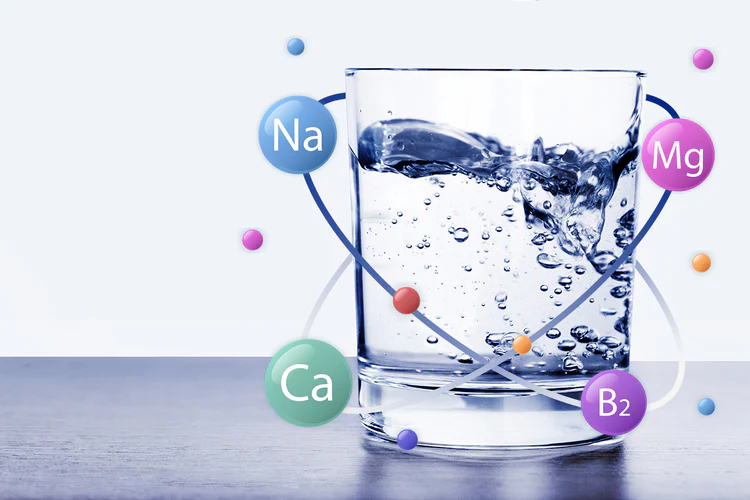

Water is essential for survival and is an important part of our everyday life. It is essential for maintaining health and well-being, and access to clean, pure water is essential for both. The importance of access to pure water for human health and well-being cannot be overstated.
Read MoreOur Blog
Latest Blog & News

Jan 12 2025
The Importance of Access to Pure Water for Human Health and Wellbeing

Jan 12 2025
"How Peore Nanofiltration Ensures Pure Water Without Losing Essential Minerals"
Peore's Nanofiltration technology revolutionizes water purification by providing safe, mineral-rich water. Unlike conventional RO systems, it removes harmful impurities while retaining essential micronutrients. The system is designed to adapt to various water.
Read More
Jan 12 2025
Under-the-counter RO Water Purifier – What Makes it so Convenient?
RO water purifiers use advanced filtration to remove impurities through a semi-permeable membrane, effectively eliminating harmful contaminants like lead, arsenic, fluoride, and nitrates for safe, clean water, ensuring better health and hydration.
Read More